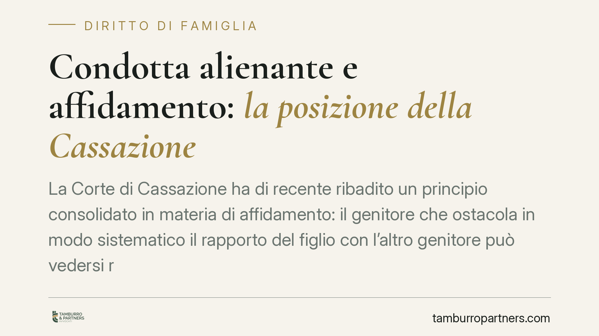

Condotta alienante e affidamento: la posizione della Cassazione
La Corte di Cassazione ha di recente ribadito un principio consolidato in materia di affidamento: il genitore che ostacola in modo sistematico il rapporto del figlio con l'altro genitore può vedersi revocare affidamento e collocamento. La volontà del minore, se condizionata, non vincola il giudice. Un orientamento che pesa su separazioni e divorzi ad alta conflittualità.

Il fatto
In un contesto di separazione conflittuale, uno dei genitori aveva progressivamente allontanato il figlio dall'altro, ostacolando frequentazioni e minando il legame affettivo. I servizi sociali avevano segnalato una dinamica di condizionamento psicologico del minore. I giudici di merito hanno disposto una modifica dell'assetto dell'affidamento; la Cassazione ha confermato l'impianto, ribadendo principi ormai consolidati.
È importante una premessa di metodo. La cosiddetta "condotta alienante" non viene trattata dai giudici come una diagnosi clinica o una categoria psichiatrica, ma come un fatto da accertare caso per caso, sulla base di comportamenti concreti e verificabili. La Cassazione ha più volte diffidato dal ricorso a etichette cliniche controverse, spostando l'attenzione sulle condotte effettive e sul loro impatto sul minore.
Inquadramento normativo
Il riferimento centrale è l'interesse superiore del minore, principio cardine dell'ordinamento interno e sovranazionale. L'art. 337-ter del Codice civile sancisce il diritto del figlio a mantenere un rapporto equilibrato e continuativo con entrambi i genitori. Quando un genitore compromette questo diritto, il giudice può intervenire sull'assetto dell'affidamento.
Lo strumento processuale è l'art. 337-quinquies c.c., che consente la revisione delle disposizioni sull'affidamento e dei provvedimenti economici quando sopravvengono elementi nuovi. Non serve attendere una nuova causa di merito: è sufficiente che emergano fatti concreti idonei a giustificare una diversa valutazione dell'interesse del minore.
Sul piano sovranazionale rileva l'art. 8 della Convenzione europea per la salvaguardia dei diritti dell'uomo e delle libertà fondamentali (CEDU), che tutela la vita familiare. La giurisprudenza della Corte europea dei diritti dell'uomo ha affermato in più occasioni che gli Stati hanno un obbligo positivo di adottare misure adeguate a preservare il legame tra genitore e figlio, anche in presenza di resistenze da parte di un genitore o del minore stesso.
Implicazioni pratiche
Il punto più delicato riguarda l'ascolto del minore. L'ordinamento prevede che il minore capace di discernimento venga ascoltato nei procedimenti che lo riguardano. Tuttavia, ascolto non significa diritto di veto. Il giudice valuta se la volontà espressa sia genuina o il frutto di un condizionamento. Una volontà manipolata non vincola la decisione: il giudice può discostarsene quando emerge che riflette la pressione di un genitore anziché l'effettivo benessere del figlio.
Per il genitore che subisce l'allontanamento, questo significa che la documentazione della condotta ostativa diventa centrale. Per il genitore accusato di condotta alienante, significa che atteggiamenti di chiusura sistematica possono tradursi nella perdita dell'affidamento condiviso e del collocamento prevalente.
Si tratta di decisioni sempre ancorate al caso concreto. Non esistono automatismi: il giudice valuta la gravità, la reiterazione delle condotte e il loro effetto reale sul minore.
Cosa fare in concreto
- Documentate i fatti. Annotate e conservate messaggi, email, mancate consegne del minore, appuntamenti disattesi: elementi concreti e datati hanno maggior peso di affermazioni generiche.
- Coinvolgete i servizi sociali. Le relazioni dei servizi e di eventuali consulenti tecnici d'ufficio costituiscono materiale istruttorio rilevante per il giudice.
- Evitate reazioni speculari. Rispondere all'ostruzionismo con comportamenti analoghi indebolisce la propria posizione e danneggia il minore.
- Tutelate il rapporto con il figlio. Mantenere un atteggiamento collaborativo e non denigratorio verso l'altro genitore è elemento valutato positivamente.
- Valutate la revisione delle condizioni. È possibile presentare istanza di modifica delle condizioni di affidamento ex art. 337-quinquies c.c. quando emergono elementi concreti e sopravvenuti.
Contributo informativo a cura di Tamburro & Partners Avvocati. Non costituisce parere legale.
Ogni famiglia ha il suo equilibrio.
Separazione, divorzio, affidamento, assegno: se vuoi un confronto riservato su una specifica situazione, scrivi allo studio. Ti rispondiamo entro un giorno lavorativo.